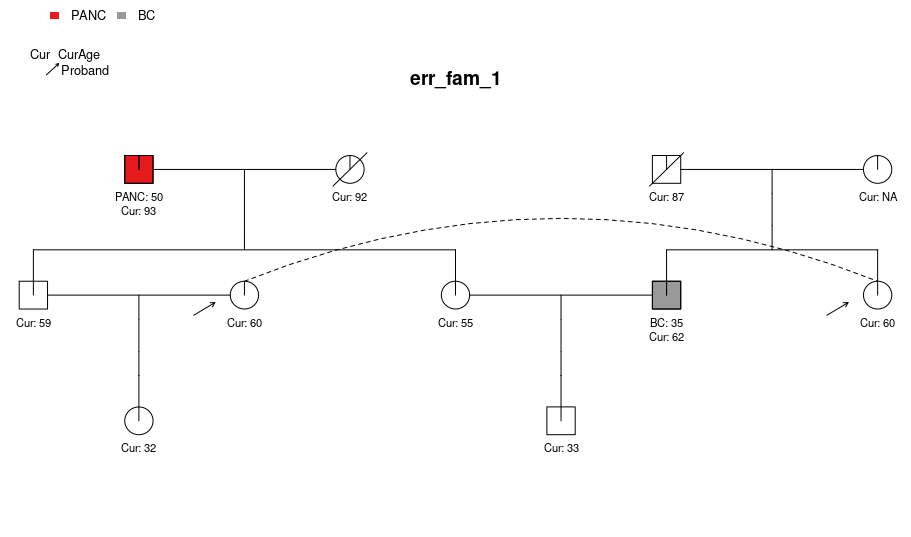
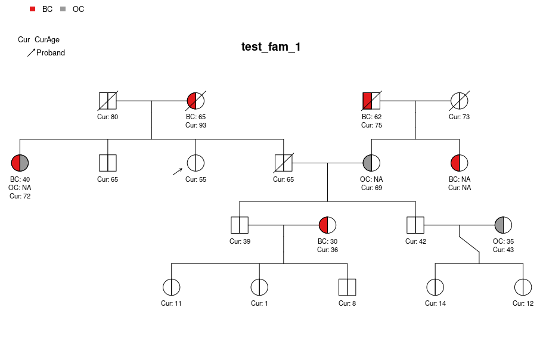
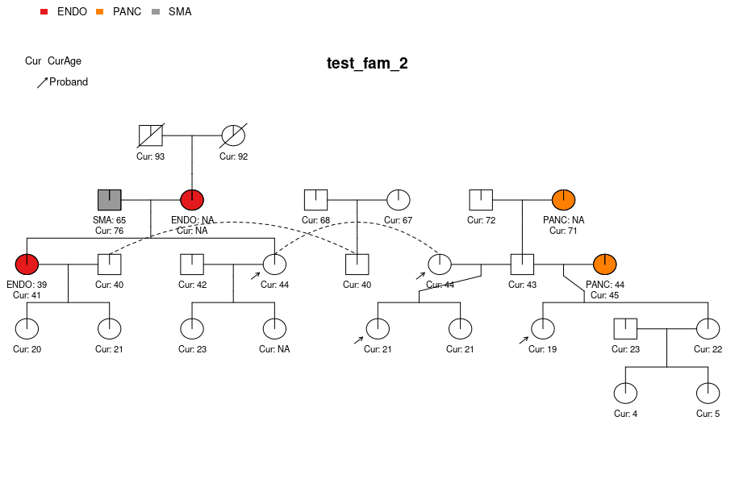
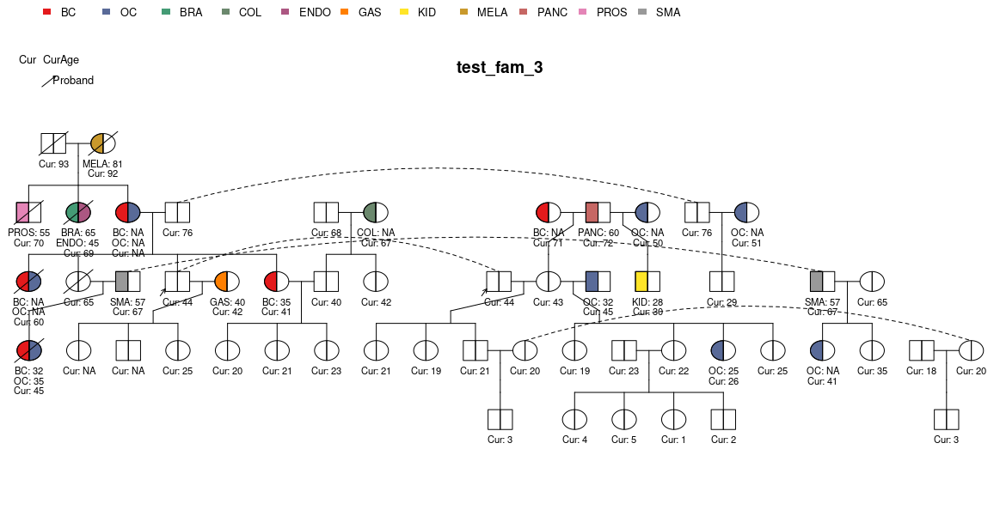
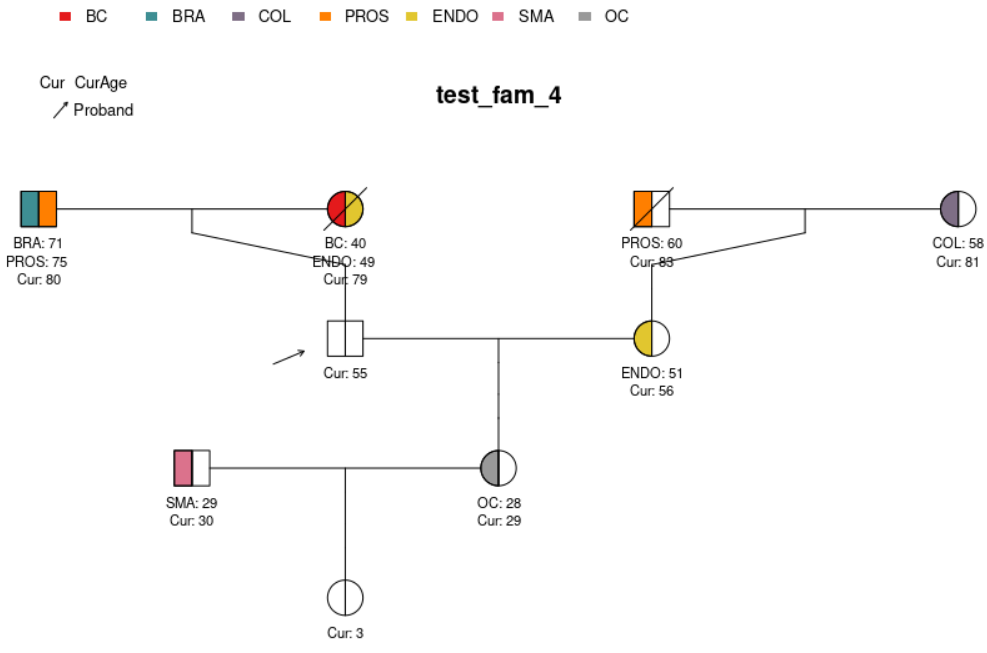

building-pedigrees.RmdThis is a guide on creating and working with pedigrees in the
PanelPRO R package.
The family history user input to the main PanelPRO
function is pedigree, which is a data.frame
with certain required columns. See help(PanelPRO) for more
detail on the expected values for these columns. This package includes
four sample pedigrees: test_fam_1, test_fam_2,
test_fam_3, test_fam_4 and
err_fam_1. These examples are intended to show users
different kinds of pedigrees that can be useful for illustrating the
capabilities of the PanelPRO package.
library(PanelPRO)
#> Welcome to the PanelPRO package, by the BayesMendel Lab!
#> PanelPRO version: 1.1.0
#> ___ _____ ___ ____
#> / _ \___ ____ ___ / / _ \/ _ \/ __ \
#> / ___/ _ `/ _ \/ -_) / ___/ , _/ /_/ /
#> /_/ \_,_/_//_/\__/_/_/ /_/|_|\____/ There are many ways one can specify or define a
data.frame in R. Below is an example for creating
err_fam_1.
# err_fam_1 data.frame set up example
# Set up basic required columns
err_fam_1 <- data.frame("ID" = 1:10)
err_fam_1$Sex <- c(0, 1, 0, 1, 0, 1, 0, 1, 0, 1)
err_fam_1$MotherID <- c(NA, NA, NA, NA, 1, 1, 3, 3, 7, 5)
err_fam_1$FatherID <- c(NA, NA, NA, NA, 2, 2, 4, 4, 6, 8)
err_fam_1$isProband <- 0
err_fam_1[err_fam_1$ID == 7, "isProband"] <- 1
err_fam_1$CurAge <- c(92, 93, NA, 87, 55, 59, 60, 62, 32, 33)
err_fam_1$isDead <- 0
err_fam_1[err_fam_1$ID %in% c(1, 4), "isDead"] <- 1
err_fam_1$Twins <- 0
err_fam_1$riskmod <- list(character(0))
err_fam_1[err_fam_1$ID == 8, "riskmod"] <- "Oophorectomy"
err_fam_1$interAge <- NA
err_fam_1[err_fam_1$ID == 8, "interAge"] <- 40
err_fam_1$race <- "Black"
err_fam_1$Ancestry <- "nonAJ"
# Set up cancers
# Pancreatic cancer
err_fam_1$isAffPANC <- 0
err_fam_1$AgePANC <- NA
err_fam_1[err_fam_1$ID == 2, "isAffPANC"] <- 1
err_fam_1[err_fam_1$ID == 2, "AgePANC"] <- 50
# Breast cancer
err_fam_1$isAffBC <- 0
err_fam_1$AgeBC <- NA
err_fam_1[err_fam_1$ID == 8, "isAffBC"] <- 1
err_fam_1[err_fam_1$ID == 8, "AgeBC"] <- 35The err_fam_1 pedigree can be visualized with the
visPed package as follows:

Note that this pedigree contains so-called ‘loops’ (see Fernando et
al., 1993), which are not currently supported by PanelPRO.
Attempting to run a PanelPRO model for pedigrees with loops
will result in an error.
PanelPRO(err_fam_1, cancers = c("Breast", "Pancreas"), genes = c("MSH2", "TP53"))
#> Your model has 2 cancers - Breast, Pancreas and 2 genes - MSH2_hetero_anyPV, TP53_hetero_anyPV.
#> Setting max.mut to 2.
#> Riskmods that are NA will be removed
#> Error in `.checkMating()`:
#> ! IDs 5 and 8 are mated but have shared relative(s) with ID(s) 6,7The other pedigrees can be visualized as follows:



For more information about each of the sample families provided by
the PanelPRO package, please see their individual help
pages.